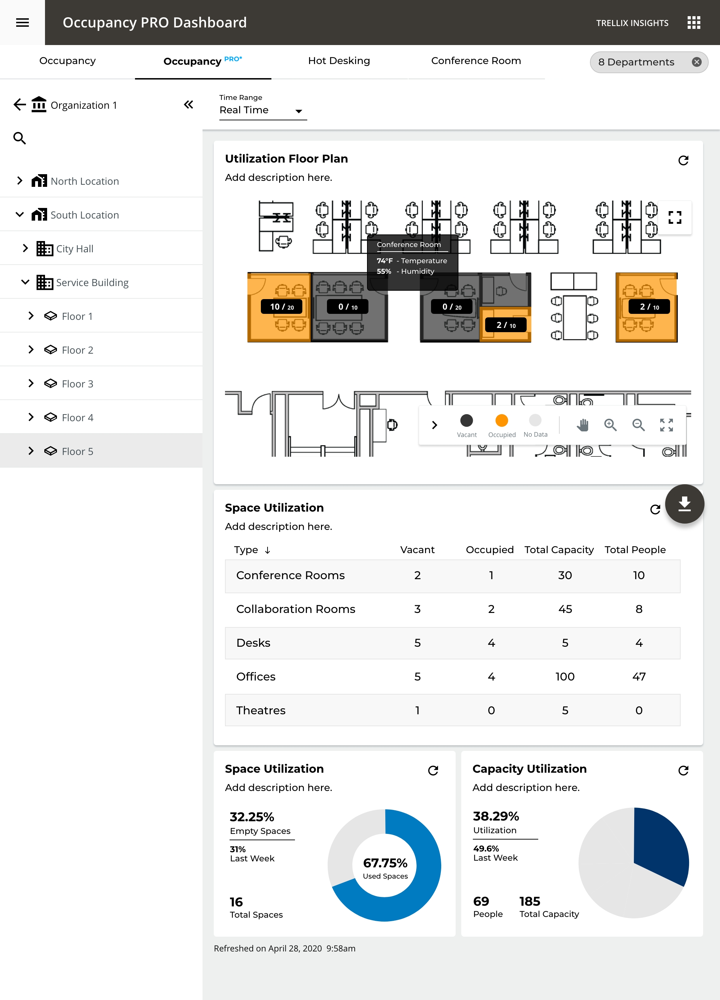
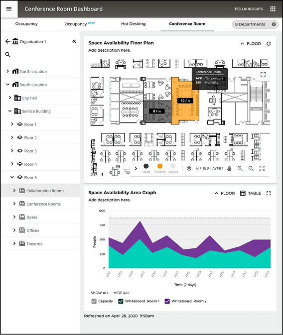
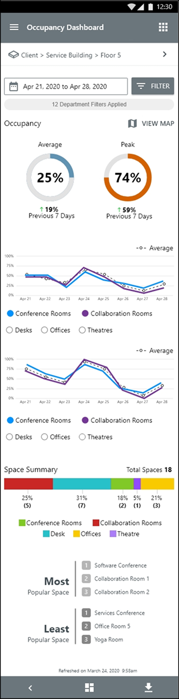
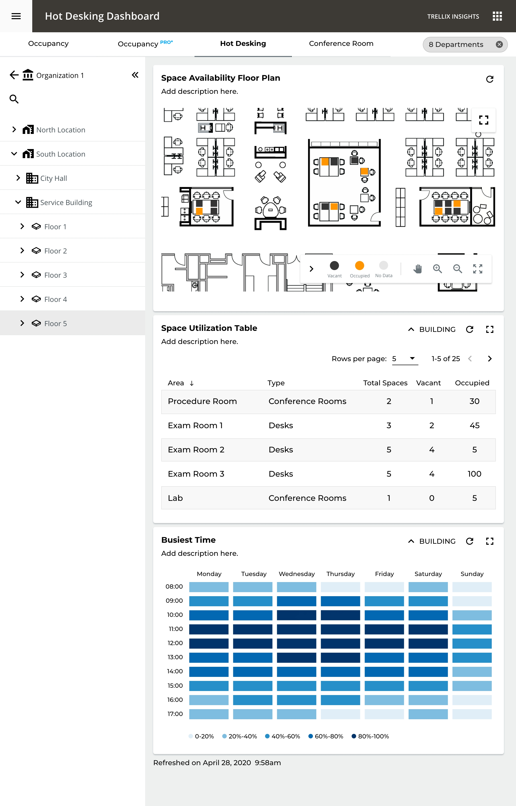
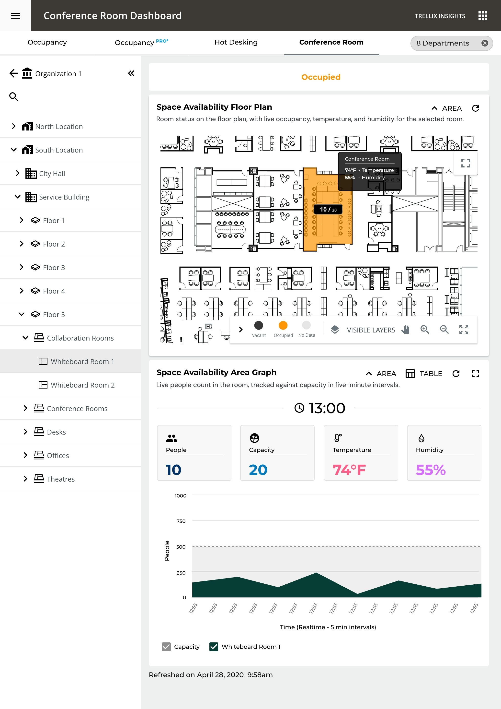

Sensors embedded in code-compliant LED luminaires streamed occupancy, energy, and environmental data around the clock. But for the facilities teams who ran these buildings, the signal stayed buried in monthly PDFs and spreadsheets.
As Experience Design Lead I owned the end-to-end UX across 12 release cycles, the dashboard, the reporting suite, the floor-map visualization, and the on-premises to cloud path, designing one operator's window into the live mesh that gives three very different users exactly the view they need.
Three forces shaped every screen, each a constraint the system had to honor, not a feature to bolt on.
One source of truth becomes the PRO analyst's portfolio heat map, the facilities manager's floor and room view, and the technician's at-a-glance answers on mobile.



The platform modeled every building as a strict device hierarchy. Facilities teams didn't think in device trees, they thought in questions about places. I mapped that system model onto a spatial one, so each level reveals just enough and the chart itself changes to match the question being asked.
At floor level a heat map replaces the bar chart, where spatial context matters more than comparative data. Click any space to inspect live occupancy, status, capacity, and trend.
From the hot-desking floor where an employee finds a free seat, to the conference rooms a manager ranks by utilization, to the analyst's portfolio rollup, every surface inherits the same spatial model and the same shared taxonomy.


CORE Insights changed how our facilities teams operate. They went from monthly reports to a live picture they can act on in seconds.